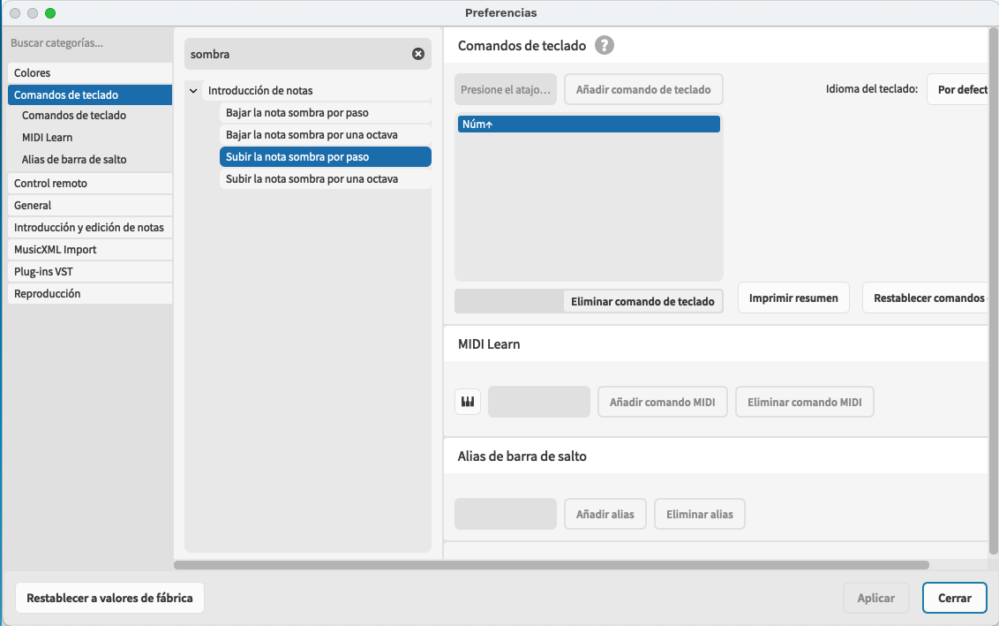
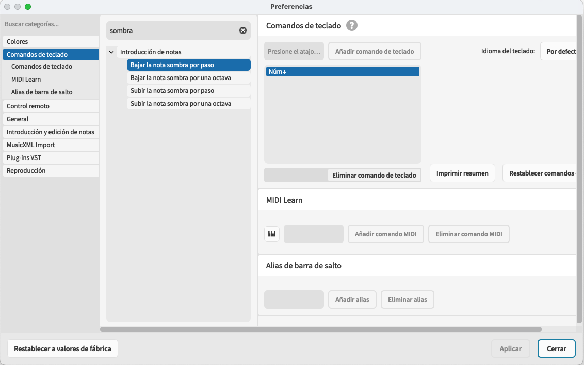
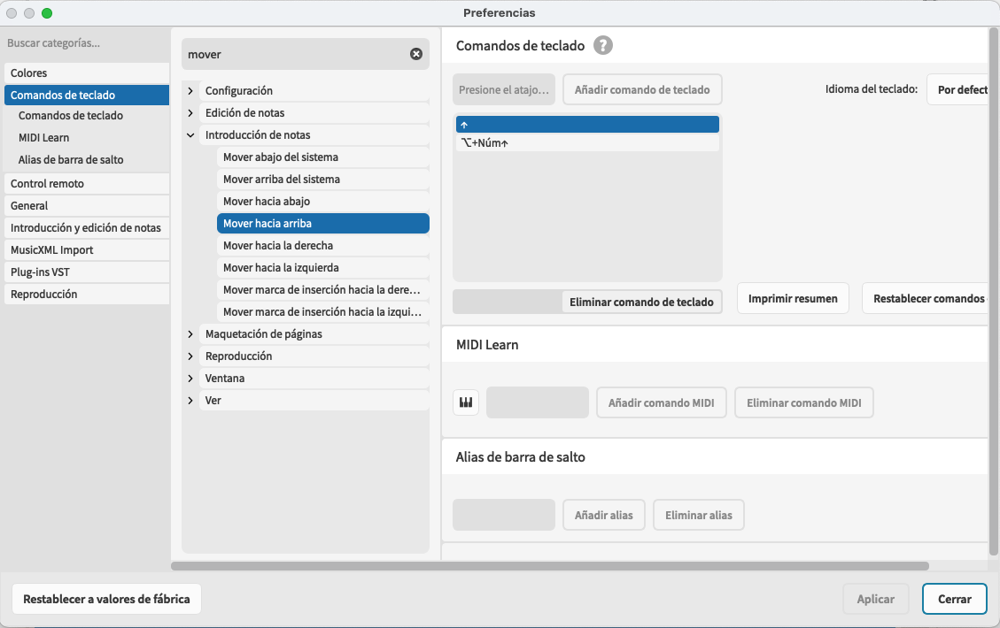
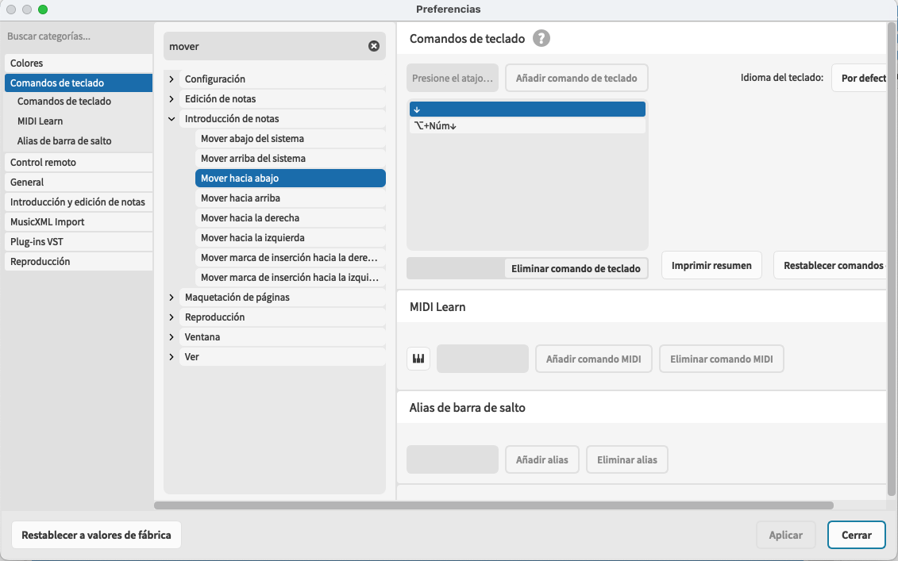
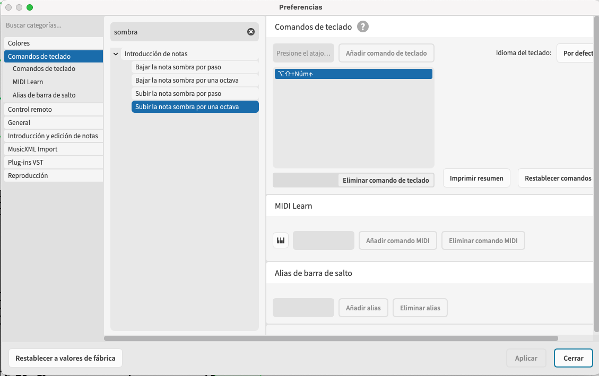
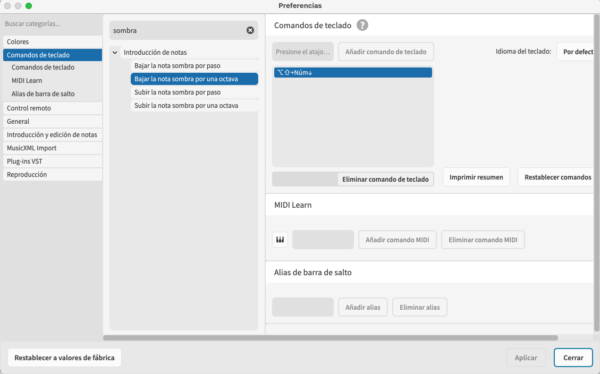
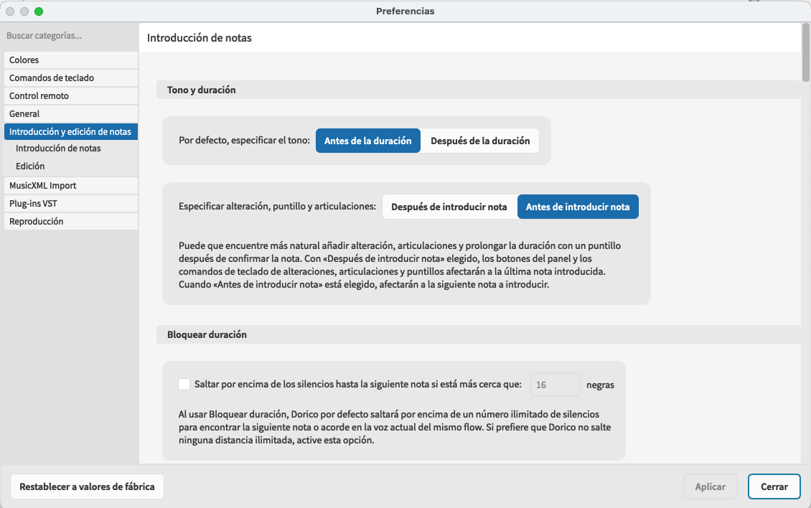
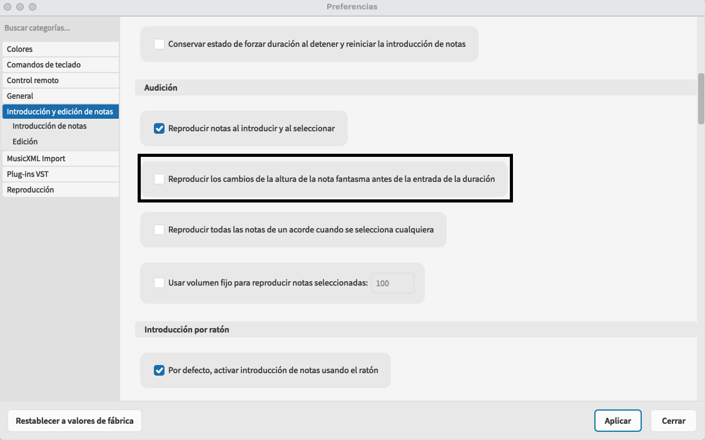

Preguntas usuarios Finale
Speedy entry notes
Blog de Dorico: Actualización 9 de Octubre 2024
En el tono antes de la entrada de duración, el tono a introducir cuando se especifique la duración se indica con una nota de sombra dibujada en el pentagrama. Puede configurar el tono de la nota de sombra escribiendo el nombre de la letra de la nota que desea introducir, o jugando en su teclado MIDI, o usando las teclas de flecha, aunque necesita mantener a Alt para mover la nota de sombra hacia arriba y hacia abajo.
En el momento de la liberación de Dorico 3.5, escuchamos de algunos antiguos usuarios de Finale que les gustaría recibir la capacidad de ajustar el tono de nota de sombra usando sólo las teclas de flecha, pero nos mostramos reacios a añadir esta capacidad. Nuestro enfoque en Dorico es que las teclas de flecha por sí solas nunca deben editar nada: siempre están destinadas a la navegación, no para la edición. Para cambiar el tono de una nota en Dorico, debes sujetar Alt y presionar la tecla de flecha arriba o abajo (y añadir Comando en macOS o Ctrl en Windows para moverte por una octava).
Sin embargo, a la luz de los muchos nuevos usuarios de Dorico que han venido de Finale, hemos introducido algunos comandos nuevos en Dorico 5.1.60 que permitirán a los aficionados de Speedy Entry configurar las cosas de tal manera que la nota de sombra se puede mover con las teclas de flecha arriba / abajo solo.
Cuatro nuevos comandos se han añadido a la categoría Nota Entrada en la página Preferencias: Mapa "Subir la nota sombra por paso" para subir flecha por paso, y mapear "Bajar la nota sombra por paso" para bajar flecha por paso.

También te recomendamos el mapa "mover hacia arriba" y "mover hacia abajo" (también en la categoría de entrada de notas) a la flecha de Alt-up y a la flecha Alt-down respectivamente, para que todavía sea posible mover el cuidador a diferentes pentagramas.

También puedes optar a mapear "Subir la nota sombra por paso por Octava" y "Bajar la nota sombra por paso por Octava".

Habiendo hecho estos cambios, después de activar la entrada de nota con "tono antes de duración", puede utilizar las teclas de flecha arriba/abajo para ajustar el tono de la nota de sombra.

Además, se ha añadido una nueva opción, escuchar cambios de nota de la sombra en el tono antes de la entrada de duración de la entrada de notas de entrada y edición. Si prefieres escuchar el tono de la nota cuando la introduces a la partitura golpeando una tecla de duración, que es como Speedy Entry se comporta en Finale, desactiva esta opción.
